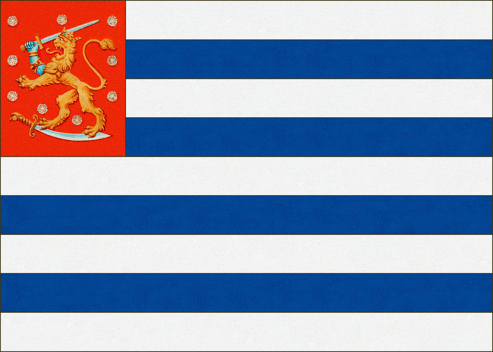

Liput olivat yleensä ihmisten itse tekemiä ja suunnittelemia. Niitä käytettiin enimmäkseen huviloissa, veneissä ja erilaisissa juhlatilaisuuksissa. Virallisissa tilaisuuksissa näiden lippujen käyttö oli kuitenkin kielletty. Lippujen yleisimmät muodot olivat ristiliput (sininen risti valkoisella tai keltainen risti keltaisella pohjalla), raitaliput (monta vaakasuoraa kapeaa raitaa päällekkäin) tai kaksiosaiset liput. Myös leijonaliput säilyivät suosittuina.



Kirjailija Santeri Ivalolle ja Elinor Ivalolle kuulunut Suomen lippu, jota käytettiin kevääseen 1918.

Ristilippu Paavolan kartanosta Ypäjällä sortokausien ajoilta, joka oli käytössä itsenäistymiseen asti.

Tuntemattoman valmistama leijonalippu.

Huvilalippu todennäköisesti 1880-luvulta.

Pekkalan kartanon lippu 1900-luvun vaihteesta. Mahdollisesti Gallen-Kallelan, ystävälleen ja kartanon omistajalle Alexander Aminoffille, suunnittelema lippu.